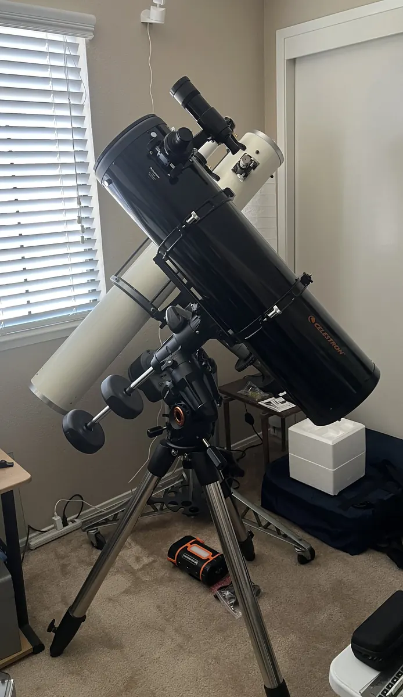

The Celestron 8″ Newtonian & the Cave Astrola 6″
In front: the 8-inch f/4.9 Newtonian on its Celestron AVX equatorial mount, the observatory’s main telescope for imaging and the future workhorse of the supernova hunt.
Behind it stands the telescope where it all began: a 6-inch Cave Astrola Newtonian, the classic American reflector of its day. It spent nearly thirty years in a corner of my parents’ garage, The Star Croft itself, brought out whenever the sky offered something worth sharing with the neighbours. Its restoration is under consideration.
In service